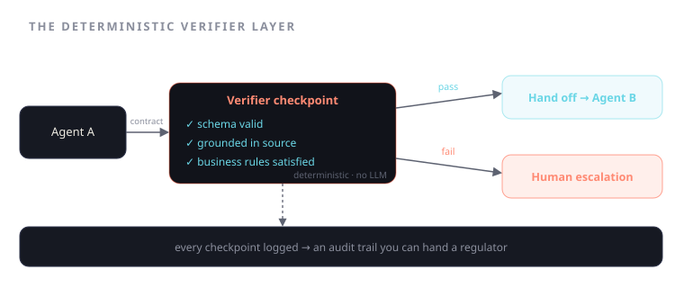

The Deterministic Verifier Layer: Making Multi-Agent Systems Auditable
What it takes to build a multi-agent system you'd actually let touch a claims payout — handoff contracts, verifiable checkpoints, and checks no model can talk its way past.
Ask whether you'd let a multi-agent system approve a claims payout and the honest answer, for almost every system being demoed today, is no. Not because the models are weak — they are remarkable — but because "remarkable" is not a property a regulator accepts. A claims decision has to be defensible: you have to be able to point at the decision after the fact and show, line by line, what was decided, on what evidence, under which rule, and where a human signed. A probabilistic system that produces a fluent recommendation gives you none of that. It gives you a good sentence and a shrug.
This is a whitepaper about the layer that closes that gap — not the agents, the layer between them. I'll call it the deterministic verifier layer, and I'll argue it decides whether a multi-agent system is a research demo or a production system you can put near money. The model is probabilistic by design; that is its gift and its disqualification. The verifier layer is deterministic by design, and that is what makes the whole assembly auditable. Ground this in two systems I've built it into: the seven-agent Agentic Claims Intelligence Suite, and the harness underneath Vortic.

The architecture in one breath
The Agentic Claims Intelligence Suite is seven specialist agents — intake, triage, fraud-signal detection, medical-evidence reasoning, settlement recommendation, audit, and routing. Each is good at one thing. Left to pass free-text messages to each other, they would reproduce the failure mode of every prompt chain: confident outputs, lost provenance, errors laundered downstream until one of them lands on a payout.
What makes the assembly trustworthy is not the agents. It is three things wrapped around them: inter-agent handoff contracts, verifiable checkpoints, and a deterministic check set no LLM can game. Together they produce the fourth thing the regulator actually wants: an audit trail that is a byproduct of how the system runs, not a report someone writes afterward.
Handoff contracts: the seam where errors die
Between every pair of agents is a contract. Triage does not hand the fraud agent a paragraph; it hands a typed object with required fields — claim type, severity band, the specific documents reviewed, and the provenance of each fact. The contract is enforced. If triage tries to pass a severity assessment without the evidence it rests on, the handoff fails at the seam, not three agents later when the settlement agent has already priced it.
This is the structural decision that makes everything downstream possible. A free-text handoff is unauditable by construction — you cannot later prove what the fraud agent actually received. A contract makes the boundary inspectable: this agent asserted these facts, with this evidence, and the next agent accepted them only because they satisfied the contract. The audit trail writes itself because every edge in the graph is already a checkable, logged event.
The deterministic checks: pass or fail, nothing to charm
At each verifiable checkpoint the verifier runs hard checks. Not "does this look right" — the model already thinks everything looks right; that is the problem. Deterministic, binary checks with no prose surface for a model to talk past:
- Schema validity. Is the handoff object well-formed and complete? Missing the required field, wrong type, out of range — fail. No partial credit.
- Grounding. Every fact an agent asserts must trace to a source in the claim file. The medical-evidence agent claims a pre-existing condition? Point to the document, the section, the line. If the assertion can't be grounded, it does not pass — no matter how confident the agent is, no matter how plausible the prose.
- Business rules. Does the settlement recommendation satisfy policy limits, sub-limits, deductibles, exclusions, and jurisdictional constraints? These are deterministic facts about the policy, not judgment calls. The rule is satisfied or it isn't.
The defining property of all three: an LLM cannot game them. You can prompt-inject a model, lead it toward a flattering conclusion, get it to produce a beautifully reasoned wrong answer. You cannot make an ungrounded fact trace to a source that doesn't contain it, and you cannot make a settlement that breaches a sub-limit satisfy a schema that encodes the sub-limit. The check has no opinion to influence. That is the entire point of pushing it out of the model and into a deterministic layer. A check the model can reason with is a check the model can defeat.
Why this is the line for regulated work
The distinction I keep drawing is between a harness and a prompt chain, and the verifier layer is exactly where that distinction lives. A prompt chain trusts each model's output and forwards it. A harness verifies each output against checks the model can't influence before letting it propagate. In the claims suite, the fraud agent's signal does not reach the settlement agent as gospel — it reaches it as an asserted, grounded, schema-valid finding that cleared a checkpoint. If it can't clear the checkpoint, the run does not quietly proceed on a guess. It stops, flags the checkpoint that failed, and routes to a human with the exact reason attached.
That stopping behaviour is not a degraded mode. It is the feature. The expensive failure in claims is never a clumsy sentence; it is a confident, ungrounded assertion that survives all the way to a payout because nothing along the path was empowered to say no, this isn't proven. The verifier layer is that empowerment, made deterministic so it can't be charmed out of it.
So, what does it take to build a multi-agent system you'd let touch a claims payout or a general ledger? Four things, and the models are the cheapest of them.
What it takes, concretely
- Typed handoff contracts at every agent boundary, enforced, with provenance required — so the audit trail is a byproduct.
- Verifiable checkpoints between steps, where the run can be stopped before an unproven fact propagates.
- A deterministic check set — schema, grounding, business rules — living outside the models, binary pass/fail, immune to prompting.
- A human escalation path that fires automatically on a failed check, with the failing check and its evidence attached.
The agents are interchangeable; swap the model next quarter and the architecture holds. The verifier layer is what you keep — and the only part a regulator will ever care about, because it is the only part that can prove what happened.
A model can tell you it approved the claim. Only the verifier layer can prove it should have.